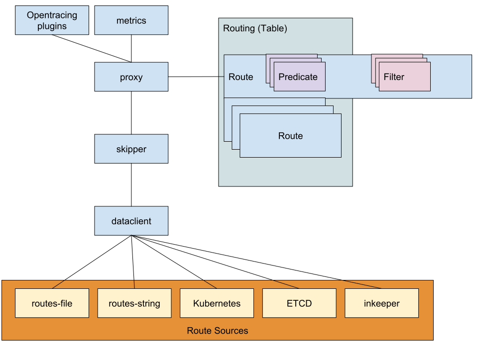
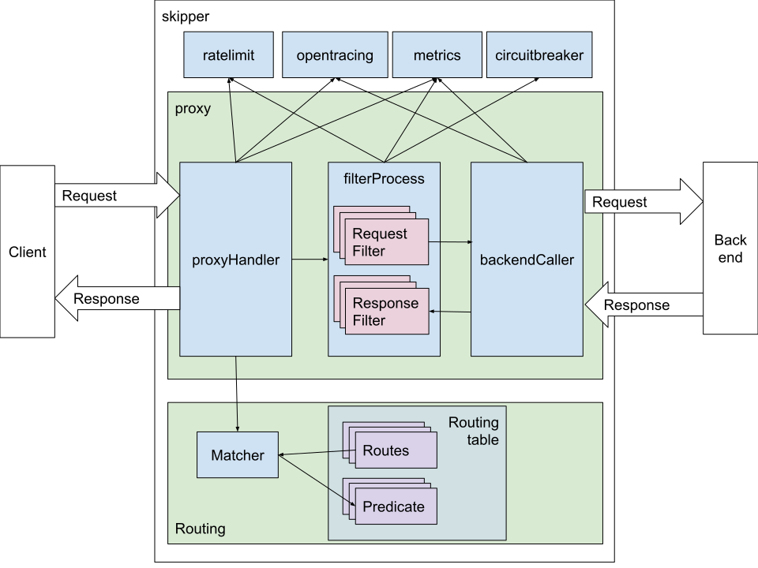

Architecture¶
Skipper is written as a library and is also a multi binary project with
2 binaries, named skipper and eskip. Skipper is the HTTP proxy
and eskip is a CLI application to verify, print, update or delete
Skipper routes.
Skipper’s internal architecture is split into different packages. The
skipper package has connections to multiple dataclient, that pull
information from different sources, for example static routes from an
eskip file or dynamic routes from Kubernetes ingress objects.
The proxy package gets the routes populated by skipper and has
always a current routing table which will be replaced on change.
A route is one entry in the routing table. A route consists of one or
more predicate, that are used to find a route for a given HTTP
request. A route can also have one or more filter, that can modify
the content of the request or response. A route can point to a
backend, it can be a <shunt>, meaning that skipper serves the requests
for the route, a <loopback>, meaning that the requests will be
matched against the routing table again after filters have modified
them, or a <dynamic>, meaning that the target url can be set dynamically
by a filter (e.g. setDynamicBackendUrl).
Opentracing API is supported via skipper-plugins. For example Jaeger is supported.
Skipper has a rich set of metrics that are exposed as json, but can be exported in Prometheus format.

Route processing¶
Package skipper has a Go http.Server and does the ListenAndServe
call with the loggingHandler wrapped proxy. The loggingHandler
is basically a middleware for the proxy providing access logs and
both implement the plain Go http.Handler interface.
For each incoming http.Request the proxy will create a request
context and enhance it with an Opentracing API Span.
It will check proxy global ratelimits first and after that lookup the
route in the routing table. After that skipper will apply all request
filters, that can modify the http.Request. It will then check the
route local ratelimits, the circuitbreakers and do the backend
call. If the backend call got a TCP or TLS connection error in a
loadbalanced route, skipper will do a retry to another backend of that
loadbalanced group automatically. Just before the response to the
caller, skipper will process the response filters, that can change the
http.Response.
In two special cases, skipper doesn’t forward the request to the
backend. When the route is shunted (<shunt>), skipper serves the
request alone, by using only the filters. When the route is a
<loopback>, the request is passed to the routing table for finding
another route, based on the changes that the filters made to the
request.

Routing mechanism¶
The routing executes the following steps in the typical case:
-
Select the best fitting route by matching the request against the predicates. When no route found, respond with 404 (unless the default status code is configured to a different value).
-
Execute the filters defined in the route in normal order on the request. The filters may or may not alter the request.
-
Forward the request to the backend defined by the route and receive a response.
-
Execute the filters defined in the route in reverse order on the response. The filters may or may not alter the response.
-
Respond to the incoming request with the resulting response.
Route matching¶
Skipper can handle a relatively large number of routes with acceptable
performance, while being able to use any attribute of the incoming HTTP
requests to distinguish between them. In order to be able to do so, the
path matching predicates (Path() and PathSubtree() but not PathRegexp())
have a special role during route matching, which is a tradeoff by
design, and needs to be kept in mind to understand in some cases why a
certain route was matched for a request instead of another.
The route matching logic can be summed up as follows:
-
Lookup in the path tree based on the
Path()and thePathSubtree()predicates, using the path component of the incoming request’s URI. Then the remaining predicates of the found route(s) are evaluated.-
the path lookup is a radix tree with O(log(n)) time complexity
-
in case of intersecting paths, the more specific path is matched in the tree
-
PathRegexp()is not used in the tree, but it is evaluated only afterPath()orPathSubtree(), just like e.g.Method()orHost().
-
-
If step #1 matches multiple routes, which means there are multiple routes in the same position of the path tree, and all other predicates match the request, too, then the route with the highest weight is matched.
-
this is an O(n) lookup, but only on the same leaf
-
the root of the tree is considered a single leaf, so if not using the
Path()orPathSubtree()predicates, the entire lookup will become O(n) over all the routes.
-
-
If #2 results in multiple matching routes, then one route will be selected. It is unspecified which one.